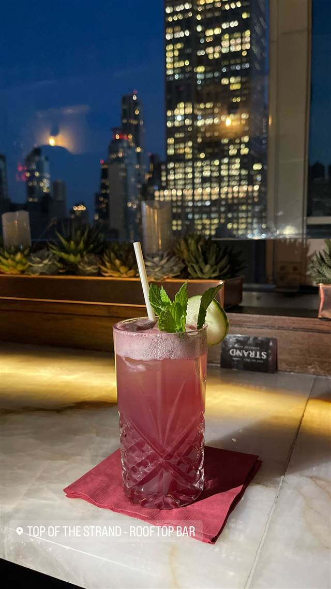

Top of the Strand Rooftop Bar
開閉式ガラス屋根の下エンパイア・ステート・ビルを望むバー
TOP OF THE STRAND - ROOFTOP BAR
ミッドタウンのホテル21階にあるルーフトップバー。開閉式のガラス屋根の下、エンパイア・ステート・ビルを望みながらカクテルを楽しめる。ホテル自体は改称されたが、バーの名前は昔の「ザ・ストランド」のまま残されている。
TRIVIA
豆知識
- 入居するホテルは「ザ・ストランド」から「マリオット・バケーション・クラブ・パルス」に名称変更されたが、屋上バーの名前「Top of the Strand」は昔のまま使われ続けている
REVIEWS
世間の評判
エンパイアステートを望む眺望
- エンパイアステートビルを望む眺望を素晴らしいと評価する声が多い
- とても丁寧な接客とフレンドリーな雰囲気を評価する声が多く挙がる
- 眺めは良いが飲食は高めで座席数も少ないという声が複数見られる
Tripadvisor
| 看板 | フレンチのスーヴィード技法を使ったオリジナルカクテル「アンダー・プレッシャー」 |
|---|---|
| こだわり | 開閉式のガラス屋根を備え、天候や季節を問わず屋上体験を提供する |
| どこから | 海外 |
| 予約 | 予約可 |
| 場所 | 34丁目-ハラルドスクエア駅 33 West 37th Street, New York, NY 10018 (Marriott Vacation Club Pulse内) |
| メモ | ホテル21階、テラスはこぢんまりとした造り。エンパイア・ステート・ビルの眺望が売り |
食べたもの：カクテルと夜景